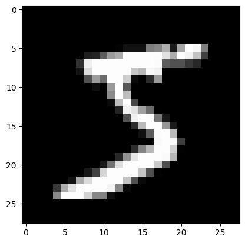
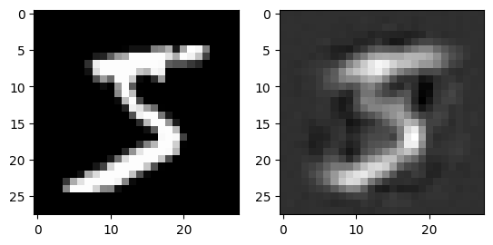
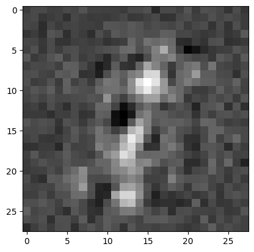
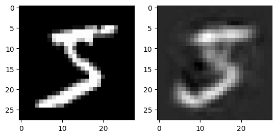
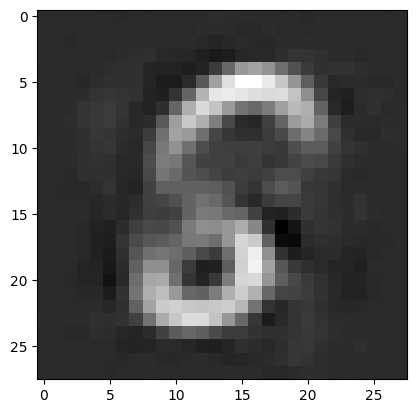
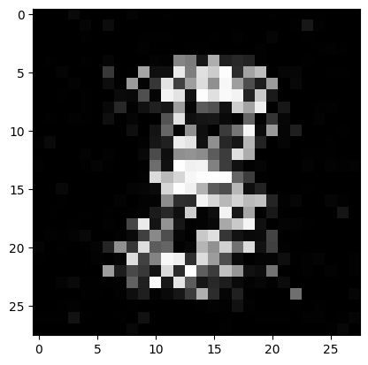

import torch
import torch.nn as nn
import torch.optim as optim
import matplotlib.pyplot as plt
from torchvision import datasets, transforms
from torch.utils.data import DataLoader
Paradigmas Avançados de Aprendizagem#
Na aula de hoje, exploraremos um dos paradigmas mais avançados no campo do aprendizado de máquinas: o self-supervised learning. O self-supervised learning está revolucionando a forma como os modelos são treinados, permitindo o aprendizado de representações poderosas a partir de dados não rotulados, utilizando tarefas auxiliares que extraem informações úteis diretamente do próprio dado, como a predição de partes ausentes ou o aprendizado de similaridade. Vamos mergulhar nas técnicas mais influentes, como autoencoders, contrastive learning, e abordagens inovadoras como o BERT e masked autoencoders. Esse paradigma abre novas possibilidades no uso da inteligência artificial para resolver problemas complexos de forma mais eficiente e autônoma.
Self-Supervised Learning#
No self-supervised learning, o modelo resolve tarefas de pretexto — tarefas auxiliares geradas automaticamente a partir dos próprios dados, como a predição de partes mascaradas, reconstrução de imagens ou a aprendizagem de similaridades entre amostras. Durante a aula, discutiremos tópicos como autoencoders, masked autoencoders, e técnicas poderosas de aprendizado contrastivo, como SimCLR e MoCo. Além disso, veremos como modelos como o BERT utilizam essas ideias no processamento de linguagem natural e como isso impulsiona o desenvolvimento de soluções de ponta sem a necessidade de grandes quantidades de dados rotulados. Antes disso, vamos entender autoencoders e generative adversarial networks.
Autoencoders#
Autoencoders são modelos projetados para aprender representações dos dados ao tentar reconstruir a entrada original a partir de uma codificação latente. Eles funcionam sem a necessidade de rótulos, utilizando a própria estrutura dos dados como supervisão, tornando-os extremamente úteis para tarefas como compressão, remoção de ruído e geração de dados. Estes modelos foram introduzidos bem antes da definição formal de self-supervised learning, mas seu princípio de utilizar os próprios dados como supervisão se alinha perfeitamente com esse paradigma.
Autoencoder Clássico#
Os autoencoders são um tipo de rede neural projetada para aprender uma representação compacta dos dados, também conhecida como codificação latente, de forma não supervisionada. Uma das suas primeiras idéias surgiu na década de 1980 por Geoffrey Hinton. Eles são compostos por duas partes principais: o codificador, que reduz a dimensionalidade dos dados de entrada ao projetá-los em um espaço latente de menor dimensão, e o decodificador, que tenta reconstruir os dados originais a partir dessa representação comprimida. A principal aplicação dos autoencoders está em tarefas como redução de dimensionalidade, remoção de ruído e geração de novas amostras.

A avaliação de autoencoders geralmente é feita comparando a similaridade entre os dados de entrada e sua reconstrução gerada pelo decodificador, utilizando métricas como erro quadrático médio (MSE) ou entropia cruzada, dependendo do tipo de dados. O objetivo é minimizar essa diferença, o que indica que o autoencoder aprendeu uma boa representação latente. A otimização dos autoencoders é realizada através de técnicas padrão de redes neurais, como a backpropagation e o uso de algoritmos de otimização, como o gradiente descendente e suas variantes.
class Autoencoder(nn.Module):
def __init__(self, input_size):
super(Autoencoder, self).__init__()
self.encoder = nn.Sequential(
nn.Linear(input_size, 256),
nn.ReLU(),
nn.Linear(256, 64),
nn.ReLU()
)
self.decoder = nn.Sequential(
nn.Linear(64, 256),
nn.ReLU(),
nn.Linear(256, input_size)
)
def forward(self, x):
x = self.encoder(x)
x = self.decoder(x)
return x
Variantes de Autoencoder#
Entre as variações dos autoencoders, o Denoising Autoencoder merece destaque por sua capacidade de aprender representações robustas ao ruído. Diferente do autoencoder tradicional, ele é treinado para reconstruir a versão original de uma entrada corrompida, o que o torna ideal para tarefas de remoção de ruído e aprendizado de características mais estáveis dos dados (Vincent et al., 2008).
Outro tipo importante é o Stacked Autoencoder, que consiste em uma rede mais profunda, onde várias camadas de autoencoders são empilhadas (Hinton & Salakhutdinov, 2006). Isso permite que o modelo aprenda representações hierárquicas, capturando características de baixo e alto nível dos dados. Ao empilhar múltiplos autoencoders, o modelo pode capturar padrões mais complexos e abstrações, sendo amplamente utilizado em pré-treinamento de redes neurais profundas.
Variational Autoencoders#
Os autoencoders variacionais (VAEs) são uma extensão dos autoencoders tradicionais que introduzem uma abordagem probabilística para a geração de dados (Kingma e Welling, 2013). Em vez de codificar os dados diretamente em um espaço latente fixo, os VAEs aprendem distribuições probabilísticas que representam as características latentes dos dados, com a rede aprendendo os parâmetros de média e variância dessas distribuições. Essa estrutura permite que o modelo gere novas amostras ao amostrar dessas distribuições latentes, o que torna os VAEs ideais para tarefas como síntese de dados, geração de imagens e aprendizado de características latentes com maior capacidade de generalização.

Em termos de avaliação e otimização, além da reconstrução dos dados, o VAE incorpora na função de perda um termo de regularização chamado divergência Kullback-Leibler (KL), que mede o quão próxima a distribuição latente aprendida está de uma distribuição normal padrão. A otimização, então, busca equilibrar dois objetivos: minimizar a perda de reconstrução, para garantir que a entrada seja bem reconstruída, e minimizar a divergência KL, para manter a estrutura latente bem regularizada. Esse processo permite que o VAE não apenas reconstrua os dados, mas também gere novas amostras de maneira mais controlada e com maior capacidade de generalização.
class VAE(nn.Module):
def __init__(self, input_size):
super(VAE, self).__init__()
self.encoder = nn.Sequential(
nn.Linear(input_size, 400),
nn.ReLU()
)
self.mu_layer = nn.Linear(400, 20)
self.logvar_layer = nn.Linear(400, 20) # Log variância
# Decoder
self.decoder = nn.Sequential(
nn.Linear(20, 400),
nn.ReLU(),
nn.Linear(400, input_size),
)
def reparameterize(self, mu, logvar):
std = torch.exp(0.5 * logvar)
eps = torch.randn_like(std)
return mu + eps * std
def forward(self, x):
encoded = self.encoder(x)
mu = self.mu_layer(encoded)
logvar = self.logvar_layer(encoded)
z = self.reparameterize(mu, logvar)
decoded = self.decoder(z)
return decoded, mu, logvar
def loss_function(recon_x, x, mu, logvar):
BCE = nn.functional.binary_cross_entropy(recon_x, x, reduction='sum')
KLD = -0.5 * torch.sum(1 + logvar - mu.pow(2) - logvar.exp()) # KL Diverg.
return BCE + KLD
Generative Adversarial Networks#
As GANs consistem em duas redes neurais que competem entre si: uma geradora, que cria dados falsos a partir de ruído, e uma discriminadora, que tenta distinguir entre dados reais e gerados. Embora as GANs não se encaixem diretamente nas típicas tarefas de pretexto que veremos em uma seção futura, elas utilizam o aprendizado auto-supervisionado na medida em que a rede discriminadora não precisa de rótulos explícitos; ela aprende a identificar padrões nos dados gerados e reais através da própria estrutura dos dados. Este processo adversarial resulta em um modelo capaz de aprender representações poderosas sem supervisão explícita, o que torna as GANs uma ferramenta essencial para tarefas como geração de imagens, aumento de dados e transferência de estilo.
GAN Clássico#
As Generative Adversarial Networks (GANs), introduzidas por Ian Goodfellow em 2014, são um tipo de rede neural composta por dois modelos que competem entre si: um gerador, que cria novos dados a partir de uma entrada aleatória, e um discriminador, que tenta distinguir entre os dados reais e os gerados. O gerador busca melhorar suas amostras de forma a “enganar” o discriminador, enquanto o discriminador tenta identificar corretamente os dados gerados. Esse processo adversarial resulta em um gerador capaz de produzir dados realistas, como imagens, vídeos, ou textos, que são quase indistinguíveis dos dados reais. GANs têm aplicações amplas em áreas como geração de imagens, super-resolução, e síntese de dados.

class Generator(nn.Module):
def __init__(self, latent_dim, output_size):
super(Generator, self).__init__()
self.model = nn.Sequential(
nn.Linear(latent_dim, 256),
nn.ReLU(),
nn.Linear(256, 512),
nn.ReLU(),
nn.Linear(512, 1024),
nn.ReLU(),
nn.Linear(1024, output_size),
nn.Tanh() # Para normalizar a saída entre [-1, 1]
)
def forward(self, z):
img = self.model(z)
return img
class Discriminator(nn.Module):
def __init__(self, input_size):
super(Discriminator, self).__init__()
self.model = nn.Sequential(
nn.Linear(input_size, 1024),
nn.LeakyReLU(0.2),
nn.Linear(1024, 512),
nn.LeakyReLU(0.2),
nn.Linear(512, 256),
nn.LeakyReLU(0.2),
nn.Linear(256, 1),
nn.Sigmoid()
)
def forward(self, x):
validity = self.model(x)
return validity
StyleGAN#
A arquitetura do StyleGAN é uma evolução das redes generativas adversárias (GANs), projetada para permitir controle preciso sobre os atributos de imagens geradas. Diferente das GANs tradicionais, o StyleGAN introduz um mapeamento de espaço latente separado, onde um vetor de entrada passa por várias camadas completamente conectadas antes de ser injetado, em diferentes estágios, na rede geradora. Esse mapeamento, chamado de “style space”, permite que a rede controle aspectos específicos da imagem, como cor, textura ou formato, em múltiplas escalas. A rede geradora também utiliza Adaptive Instance Normalization (AdaIN), que ajusta a ativação em cada nível da rede, permitindo variações finas nos detalhes da imagem. Essa abordagem resulta em imagens altamente realistas e oferece controle sobre características específicas, como pose ou identidade em imagens de rostos, o que torna o StyleGAN um dos modelos mais avançados para a síntese de imagens realistas.

CycleGAN#
O CycleGAN é uma arquitetura de rede neural voltada para a tradução de imagens entre domínios sem a necessidade de pares de imagens correspondentes no treinamento. Diferente de outras GANs, que requerem dados emparelhados (como uma imagem de entrada e sua versão modificada), o CycleGAN utiliza um ciclo de consistência para garantir que uma imagem convertida de um domínio possa ser revertida para sua forma original. Isso é feito com duas redes geradoras e duas redes discriminadoras: uma geradora transforma imagens de um domínio para outro (por exemplo, fotos para pinturas) e a segunda faz a transformação inversa. O ciclo de consistência, onde uma imagem transformada retorna ao seu estado original, ajuda a manter a estrutura da imagem. O CycleGAN é amplamente utilizado para tarefas como transferência de estilo, mudanças sazonais em fotos e modificação de imagens sem a necessidade de grandes conjuntos de dados anotados.

Exemplo de Reconstrução e Geração de Dados com MNIST#
batch_size = 64
latent_dim = 20
lr = 0.0002
epochs = 5
transform = transforms.Compose([transforms.ToTensor(), transforms.Normalize((0.5,), (0.5,))])
dataset = datasets.MNIST(root='./data', train=True, download=True, transform=transform)
dataloader = DataLoader(dataset, batch_size=batch_size, shuffle=True)
plt.imshow(dataset[0][0][0], cmap='gray')
plt.show()

ae = Autoencoder(input_size=28*28)
optimizer = optim.Adam(ae.parameters(), lr=0.001)
criterion = nn.MSELoss()
for epoch in range(epochs):
for imgs, _ in dataloader:
imgs = imgs.view(imgs.size(0), -1)
recon = ae(imgs)
loss = criterion(recon, imgs)
optimizer.zero_grad()
loss.backward()
optimizer.step()
print(f'Epoch [{epoch+1}/{epochs}], Loss: {loss.item():.4f}')
fig, axs = plt.subplots(1,2)
output = ae(dataset[0][0].flatten())
axs[0].imshow(dataset[0][0][0].numpy(), cmap='gray')
axs[1].imshow(output.view(28, 28).detach().numpy(), cmap='gray')
plt.show()

output = ae.decoder(torch.randn(1,64))[0]
plt.imshow(output.view(28, 28).detach().numpy(), cmap='gray')
plt.show()

vae = VAE(input_size=28*28)
optimizer = optim.Adam(vae.parameters(), lr=0.001)
def vae_loss(recon_x, x, mu, logvar):
recon_loss = nn.functional.mse_loss(recon_x, x, reduction='sum')
kld = -0.5 * torch.sum(1 + logvar - mu.pow(2) - logvar.exp())
return recon_loss + kld
for epoch in range(epochs):
for imgs, _ in dataloader:
imgs = imgs.view(imgs.size(0), -1) # Flatten the image
recon, mu, logvar = vae(imgs)
loss = vae_loss(recon, imgs, mu, logvar)
optimizer.zero_grad()
loss.backward()
optimizer.step()
print(f'Epoch [{epoch+1}/{epochs}], Loss: {loss.item():.4f}')
fig, axs = plt.subplots(1,2)
output, _, _ = vae(dataset[0][0].flatten())
axs[0].imshow(dataset[0][0][0].numpy(), cmap='gray')
axs[1].imshow(output.view(28, 28).detach().numpy(), cmap='gray')
plt.show()

output = vae.decoder(torch.randn(1,20))[0]
plt.imshow(output.view(28, 28).detach().numpy(), cmap='gray')
plt.show()

generator = Generator(latent_dim, 28*28)
discriminator = Discriminator(28*28)
adversarial_loss = nn.BCELoss()
optimizer_G = optim.Adam(generator.parameters(), lr=lr)
optimizer_D = optim.Adam(discriminator.parameters(), lr=lr)
epochs = 10
for epoch in range(epochs):
print(f'Epoch [{epoch+1}/{epochs}]')
for i, (imgs, _) in enumerate(dataloader):
# Ground truths
real_imgs = imgs
real_labels = torch.ones(imgs.size(0), 1)
fake_labels = torch.zeros(imgs.size(0), 1)
# ---------------------
# Train Discriminator
# ---------------------
optimizer_D.zero_grad()
# Real images
real_loss = adversarial_loss(discriminator(real_imgs.view(real_imgs.size(0), -1)), real_labels)
# Fake images
z = torch.randn(imgs.size(0), latent_dim)
fake_imgs = generator(z)
fake_loss = adversarial_loss(discriminator(fake_imgs.detach()), fake_labels)
d_loss = real_loss + fake_loss
d_loss.backward()
optimizer_D.step()
# -----------------
# Train Generator
# -----------------
optimizer_G.zero_grad()
# Train the generator to "fool" the discriminator
g_loss = adversarial_loss(discriminator(fake_imgs), real_labels)
g_loss.backward()
optimizer_G.step()
# Print the progress
if (i % 400) == 0:
print(f'\tBatch {i}/{len(dataloader)} Loss D: {d_loss.item()}, Loss G: {g_loss.item()}')
output = generator(torch.randn(1,latent_dim))[0]
plt.imshow(output.view(28, 28).detach().numpy(), cmap='gray')
plt.show()

Siamese Networks#
As Siamese Networks, introduzidas por Yann LeCun e seus colegas em 1993, são uma arquitetura poderosa que pode ser usada tanto em cenários supervisionados quanto em self-supervised learning. No contexto de self-supervision, as Siamese Networks são amplamente utilizadas em técnicas de aprendizado contrastivo, onde a rede aprende a comparar pares de dados. A arquitetura consiste em dois ou mais ramos idênticos (compartilhando pesos) que processam diferentes amostras e geram representações latentes, que são então comparadas para medir similaridade ou dissimilaridade. Em vez de rotular explicitamente cada amostra, o modelo é treinado para maximizar a similaridade entre amostras relacionadas (pares positivos) e minimizar a similaridade entre amostras diferentes (pares negativos). Essa abordagem de auto-supervisão tem sido fundamental para tarefas como detecção de similaridade, reconhecimento facial e até mesmo aprendizado de representações robustas sem a necessidade de rótulos complexos.

No artigo original sobre Siamese Networks para verificação de assinaturas, o treinamento envolvia o uso de uma rede neural com dois ramos idênticos (compartilhando pesos), que processavam duas entradas (duas assinaturas) para gerar representações latentes. A distância do cosseno (\(d_\text{cos}\)) entre os espaços latentes (\(A\) e \(B\)) era utilizada para medir a similaridade entre essas representações. Durante o treinamento, pares de dados eram apresentados à rede, sendo pares positivos (assinaturas da mesma pessoa) e pares negativos (assinaturas falsas, ou de pessoas diferentes). O objetivo era minimizar a distância do cosseno para pares positivos, garantindo que as representações das assinaturas de uma mesma pessoa fossem semelhantes, e maximizar essa distância para pares negativos, de modo que assinaturas de pessoas diferentes fossem distinguidas claramente. Esse processo permitia à rede aprender a medir a similaridade entre assinaturas com base na orientação dos vetores no espaço latente, sem depender da magnitude dos vetores.
Siamese Networks Modernas#
As redes siamesas modernas são geralmente treinadas utilizando uma função de perda baseada na contrastive loss ou na triplet loss, com o objetivo de aprender representações latentes discriminativas. Durante o treinamento com contrastive loss (\(L\)), a rede recebe pares de exemplos, que podem ser pares positivos (amostras da mesma classe, \(y=1\)) ou pares negativos (amostras de classes diferentes, \(y=0\)). Para os pares positivos, a rede é treinada para minimizar a distância \(D\) entre as representações latentes geradas pelos dois ramos da rede, garantindo que amostras semelhantes sejam mapeadas para pontos próximos no espaço latente. Para os pares negativos, a rede é treinada para maximizar a distância, separando representações de amostras diferentes por uma margem \(m\) mínima.
Além da contrastive loss, a triplet loss tem se tornado popular, utilizando conjuntos de três exemplos — uma âncora (\(a\)), um positivo (mesma classe, \(p\)) e um negativo (classe diferente, \(n\)) — para otimizar simultaneamente a proximidade entre o âncora e o positivo e a separação do âncora em relação ao negativo por uma margem \(m\). Esses métodos têm sido amplamente aplicados em tarefas de verificação e reconhecimento facial, detecção de similaridades e aprendizado de representações robustas e comparáveis.

A triplet loss pode ser mais eficaz em cenários onde as classes são complexas ou têm fronteiras mais difíceis de distinguir. A inclusão de exemplos negativos diretamente no cálculo da perda garante que o modelo seja treinado para maximizar a separação entre diferentes classes, enquanto a contrastive loss pode, em alguns casos, não explorar bem essas relações entre classes. A contrastive loss apenas otimiza dois pontos de cada vez, enquanto a triplet loss garante uma estrutura relativa no espaço latente. Além disso, a triplet loss é projetada para lidar com hard negatives — exemplos negativos que são muito semelhantes à âncora, mas pertencem a uma classe diferente. Esses exemplos são críticos para o aprendizado eficaz de representações discriminativas. A triplet loss garante que esses exemplos sejam usados de forma eficiente no treinamento, enquanto a contrastive loss trata todos os pares negativos da mesma forma, sem distinção entre hard e easy negatives.
Tarefas de Pretexto#
As tarefas de pretexto em self-supervised learning são estratégias que visam gerar automaticamente rótulos a partir dos próprios dados, eliminando a necessidade de grandes volumes de anotações manuais. Essas tarefas utilizam informações inerentes à estrutura dos dados para criar objetivos intermediários, também conhecidos como pretext tasks, que forçam o modelo a aprender representações úteis. Entre os exemplos mais comuns estão a predição da rotação de uma imagem, o preenchimento de regiões ocultas ou a ordenação de sequências temporais. Ao treinar o modelo para resolver essas tarefas artificiais, espera-se que ele capture características robustas e generalizáveis, que podem ser posteriormente aproveitadas para outras tarefas supervisionadas ou não supervisionadas.
Idéias Iniciais#
As ideias iniciais de self-supervised learning surgiram da necessidade de superar a dependência de grandes quantidades de dados rotulados, que podem ser caros e demorados para se obter. Inspirado por conceitos do aprendizado não supervisionado, o self-supervised learning propõe a criação de tarefas auxiliares onde o próprio dado supervisiona o aprendizado, gerando rótulos a partir de informações intrínsecas aos dados. A motivação por trás dessas abordagens é que, ao explorar padrões e estruturas subjacentes aos dados, o modelo pode aprender representações mais ricas e generalizáveis. Essas primeiras ideias marcaram o início de um campo promissor, que buscava alavancar a abundância de dados não rotulados disponíveis em diversos domínios.
A tarefa de jigsaw puzzle em self-supervised learning envolve dividir uma imagem em várias partes e embaralhá-las, de modo que o modelo seja treinado para rearranjar corretamente essas partes na posição original. Introduzida como uma tarefa de pretexto por Noroozi e Favaro em 2016, essa abordagem força o modelo a entender as relações espaciais e contextuais entre diferentes regiões da imagem. Ao resolver o puzzle, o modelo aprende representações que capturam características locais e globais da imagem, tornando-se capaz de generalizar para tarefas visuais supervisionadas, como detecção de objetos e segmentação.

A colorização de imagens em self-supervised learning é uma tarefa de pretexto onde o modelo é treinado para converter uma imagem em tons de cinza para sua versão colorida. Esse método foi popularizado por Zhang et al. em 2016. A ideia é que, ao tentar prever as cores corretas para cada pixel da imagem, o modelo seja forçado a aprender representações ricas e semânticas, capturando informações sobre a forma, textura e composição dos objetos na cena. Esse aprendizado implícito ajuda a desenvolver uma compreensão visual profunda que pode ser transferida para outras tarefas supervisionadas, como reconhecimento de objetos e classificação de imagens.

A predição de rotação de imagens é uma tarefa comum em self-supervised learning, onde o modelo é treinado para identificar a rotação aplicada a uma imagem (0°, 90°, 180°, ou 270°). Essa tarefa simples força o modelo a aprender características visuais robustas e discriminativas das imagens, como formas, texturas e orientações, sem a necessidade de rótulos manuais (Gidaris et al., 2018). Ao resolver essa tarefa, o modelo é capaz de capturar representações que podem ser transferidas para outras tarefas supervisionadas, como classificação ou detecção de objetos.

Masked Language Modelling#
O masked language modeling (MLM) é uma técnica fundamental em self-supervised learning aplicada ao processamento de linguagem natural (PLN), popularizada pelo modelo BERT (2018). Nesse método, partes de uma sentença são mascaradas aleatoriamente, e o modelo é treinado para prever as palavras ocultas com base no contexto fornecido pelas palavras visíveis. Essa abordagem permite que o modelo capture relações bidirecionais dentro da sequência, compreendendo melhor a semântica e a sintaxe do texto. O MLM é uma tarefa eficaz para o aprendizado de representações linguísticas robustas, que podem ser aplicadas a uma ampla gama de tarefas de PLN supervisionadas, como classificação de texto, tradução e resposta a perguntas.

Masked Autoencoders#
Masked autoencoders (MAE) são uma técnica aplicada principalmente à área de visão computacional. Nesse método, partes significativas da entrada, como pixels em uma imagem, são mascaradas aleatoriamente, e o modelo é treinado para reconstruir essas regiões ocultas a partir das partes visíveis. Introduzido por He et al. em 2021, o MAE se inspira na ideia do masked language modeling, mas adapta o conceito para domínios visuais. Através dessa tarefa de reconstrução, o modelo aprende representações visuais ricas e eficientes, capazes de capturar tanto detalhes locais quanto estruturas globais, sendo especialmente útil para tarefas supervisionadas subsequentes, como classificação e detecção de objetos.

Contrastive Learning#
Contrastive learning é uma abordagem poderosa em self-supervised learning que busca aprender representações discriminativas, aproximando exemplos similares e afastando exemplos diferentes no espaço de representação. A ideia central é que, para cada amostra de dados, o modelo deve identificar quais outras amostras são mais parecidas, formando pares positivos (semelhantes) e negativos (diferentes). Métodos como SimCLR e MoCo popularizaram essa técnica, utilizando diferentes formas de gerar amostras positivas e negativas, como augumentações de dados ou o uso de instâncias diferentes. Contrastive learning está intimamente relacionado a Siamese Networks, uma arquitetura que também trabalha com pares de entradas, comparando similaridades entre elas para aprender representações. O aprendizado contrastivo é eficaz porque ensina o modelo a identificar características intrínsecas dos dados, resultando em representações robustas e generalizáveis para uma variedade de tarefas supervisionadas, sem a necessidade de rótulos manuais.
SimCLR#
SimCLR (Simple Framework for Contrastive Learning of Visual Representations) é uma abordagem de self-supervised learning apresentada pela equipe do Google Research em 2020, que simplifica o aprendizado contrastivo ao dispensar a necessidade de memória complexa ou redes de professores, como usadas em métodos anteriores. Em SimCLR, uma imagem é transformada por meio de diferentes augmentações (como rotação, corte ou alteração de cores), criando duas versões da mesma imagem. O modelo é então treinado para maximizar a similaridade entre essas duas versões (par positivo), enquanto minimiza a similaridade em relação a outras imagens (pares negativos). SimCLR também introduz o uso de um projection head, uma pequena rede neural que mapeia as representações aprendidas para um espaço latente adequado para o cálculo da perda contrastiva. Através desse processo, o modelo aprende representações visuais generalizáveis que podem ser transferidas para tarefas supervisionadas com excelente desempenho, especialmente em cenários com poucos dados rotulados.

MoCo#
MoCo (Momentum Contrast) é uma técnica de self-supervised learning baseada em aprendizado contrastivo, desenvolvida pela equipe da Facebook AI Research e apresentada em 2020. A principal inovação do MoCo é o uso de uma fila dinâmica e um mecanismo de atualização por momentum para construir um banco de memória consistente para as representações de amostras negativas, superando limitações de métodos anteriores, como a necessidade de grandes lotes para o cálculo das perdas contrastivas. MoCo utiliza duas redes neurais: uma rede principal e uma rede auxiliar de momentum, onde a segunda é uma versão suavizada da primeira, atualizada gradualmente com os pesos da rede principal, garantindo maior estabilidade no treinamento. Essa abordagem resulta em representações visuais de alta qualidade que podem ser transferidas eficientemente para tarefas supervisionadas, como classificação e detecção de objetos.

BYOL#
BYOL (Bootstrap Your Own Latent) é uma abordagem de self-supervised learning introduzida pela equipe do DeepMind em 2020, que se destaca por eliminar a necessidade de pares negativos, comuns em métodos de aprendizado contrastivo como SimCLR e MoCo. BYOL utiliza duas redes neurais, chamadas de online e target networks, onde a online network é treinada para prever a representação da target network. A target network é uma cópia suavizada da online network, atualizada por um mecanismo de momentum. Ao contrário de métodos contrastivos tradicionais, BYOL apenas maximiza a similaridade entre duas versões da mesma imagem, sem comparar com imagens diferentes. Esse processo, chamado de bootstrapping, permite que o modelo aprenda representações ricas sem a necessidade de pares negativos, alcançando resultados de ponta em tarefas de visão computacional, mesmo com poucos dados rotulados.

Supervised Contrastive Learning#
Supervised Contrastive Learning é uma extensão do aprendizado contrastivo tradicional que aproveita dados rotulados para melhorar o processo de aprendizado de representações. Introduzido pela equipe do Google Research em 2020, esse método aplica a lógica do contraste não apenas entre pares positivos gerados por augmentações de dados, mas também entre exemplos da mesma classe. No supervised contrastive learning, o objetivo é maximizar a similaridade entre amostras que compartilham o mesmo rótulo, enquanto se minimiza a similaridade entre amostras de classes diferentes. Essa abordagem permite que o modelo explore melhor as relações entre as categorias nos dados, resultando em representações mais discriminativas e robustas. Além disso, ele proporciona ganhos de desempenho em comparação com os métodos tradicionais supervisionados, como o uso da entropia cruzada para classificação, especialmente em cenários de classificação com múltiplas classes e em datasets com grande diversidade.

Exercícios#
Discuta sobre como abordagens como GAN conseguem fazer tarefas de geração de imagens e transformação de dados.
Discuta como pré-treino utilizando self-supervised learning é capaz de melhorar resultados de modelos supervisionados.
Encontre aplicações recentes de como self-supervised learning vem sendo utilizado em aplicações práticas.
Considerações Finais#
Nesta aula, abordamos paradigmas diferentes para treino de redes neurais artificiais. Ao invés de utilizar dados anotados, utilizamos os próprios dados de diversas formas diferentes para realizar o que chamamos de treino auto-supervisionado.
Próxima Aula#
Na próxima aula, continuaremos vendo paradigmas avançados de aprendizagem, como:
Multi-task Learning
Multi-modal Learning
Joint Embedding
Referências#
Rumelhart, D. E., Hinton, G. E., & Williams, R. J. (1986). Learning internal representations by error propagation. Parallel distributed processing, explorations in the microstructure of cognition.
Vincent, P., Larochelle, H., Bengio, Y., & Manzagol, P. A. (2008, July). Extracting and composing robust features with denoising autoencoders. In Proceedings of the 25th international conference on Machine learning (pp. 1096-1103).
Hinton, G. E., & Salakhutdinov, R. R. (2006). Reducing the dimensionality of data with neural networks. science, 313(5786), 504-507.
Kingma, D. P. (2013). Auto-encoding variational bayes. arXiv preprint arXiv:1312.6114.
Goodfellow, I., Pouget-Abadie, J., Mirza, M., Xu, B., Warde-Farley, D., Ozair, S., … & Bengio, Y. (2014). Generative adversarial nets. Advances in neural information processing systems, 27.
Karras, T., Laine, S., & Aila, T. (2019). A style-based generator architecture for generative adversarial networks. In Proceedings of the IEEE/CVF conference on computer vision and pattern recognition (pp. 4401-4410).
Zhu, J. Y., Park, T., Isola, P., & Efros, A. A. (2017). Unpaired image-to-image translation using cycle-consistent adversarial networks. In Proceedings of the IEEE international conference on computer vision (pp. 2223-2232).
Bromley, J., Guyon, I., LeCun, Y., Säckinger, E., & Shah, R. (1993). Signature verification using a” siamese” time delay neural network. Advances in neural information processing systems, 6.
Noroozi, M., & Favaro, P. (2016, September). Unsupervised learning of visual representations by solving jigsaw puzzles. In European conference on computer vision (pp. 69-84). Cham: Springer International Publishing.
Zhang, R., Isola, P., & Efros, A. A. (2016). Colorful image colorization. In Computer Vision–ECCV 2016: 14th European Conference, Amsterdam, The Netherlands, October 11-14, 2016, Proceedings, Part III 14 (pp. 649-666). Springer International Publishing.
Gidaris, S., Singh, P., & Komodakis, N. (2018). Unsupervised representation learning by predicting image rotations. arXiv preprint arXiv:1803.07728.
Devlin, J. (2018). Bert: Pre-training of deep bidirectional transformers for language understanding. arXiv preprint arXiv:1810.04805.
He, K., Chen, X., Xie, S., Li, Y., Dollár, P., & Girshick, R. (2022). Masked autoencoders are scalable vision learners. In Proceedings of the IEEE/CVF conference on computer vision and pattern recognition (pp. 16000-16009).
Chen, T., Kornblith, S., Norouzi, M., & Hinton, G. (2020, November). A simple framework for contrastive learning of visual representations. In International conference on machine learning (pp. 1597-1607). PMLR.
He, K., Fan, H., Wu, Y., Xie, S., & Girshick, R. (2020). Momentum contrast for unsupervised visual representation learning. In Proceedings of the IEEE/CVF conference on computer vision and pattern recognition (pp. 9729-9738).
Grill, J. B., Strub, F., Altché, F., Tallec, C., Richemond, P., Buchatskaya, E., … & Valko, M. (2020). Bootstrap your own latent-a new approach to self-supervised learning. Advances in neural information processing systems, 33, 21271-21284.
Khosla, P., Teterwak, P., Wang, C., Sarna, A., Tian, Y., Isola, P., … & Krishnan, D. (2020). Supervised contrastive learning. Advances in neural information processing systems, 33, 18661-18673.